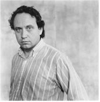
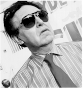
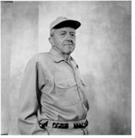

Contents | Features | Reviews | News | Archives | Store |
/store/Fast,+Cheap,+and+Out+of+Control/Fast,+Cheap,+and+out+of+Control">|
| Movie Credits | /store/Fast,+Cheap,+and+Out+of+Control/Fast,+Cheap,+and+Out+of+Control">Buy It! |
Contents | Features | Reviews | News | Archives | Store |
/store/Fast,+Cheap,+and+Out+of+Control/Fast,+Cheap,+and+out+of+Control">|
| Movie Credits | /store/Fast,+Cheap,+and+Out+of+Control/Fast,+Cheap,+and+Out+of+Control">Buy It! |
Errol Morris's Rag and Bone Shop
Feature by Lyall Bush
Posted 7 November 1997
It doesn't take much to get Errol Morris going. The documentary filmmaker has come to Seattle to about his intriguing, beautiful new film, Fast, Cheap & Out of Control, but he has barely scooted his chair in at lunch when the pressed white shirt and khakis he's wearing look out of place. Conservative and ivy league though he looks, Morris has a great, wandering animated gaze and he loves to speak with exaggeration and irony about his own literal-mindedness, his self-loathing, about pop culture, documentary film, and what he calls "the hundred filters between what I think is real and the real world." He's thought about a lot, and it's all a head-scratching combination of the curious, the absorbing, the plainly weird, the melancholy, and the hilarious.
Morris waves his arms at the preposterous grandness of the hotel dining room he's in, for example: "I can't even begin to understand this," he says, blinking, as though looking at his guest for an answer.
It's entirely possible that he really wants to know too. "I'm obviously at the end of my tether," he concludes rather brightly, as if the end of his tether were a familiar place. And indeed, words spin out of him easily. The waiter comes by for his order. "Salmon," he intones, "the gift that keeps on giving."
If the phrase seems to delight him there's a good reason: it's entirely in keeping with his long appreciation for vernacular speech and for the warped, sometimes beautiful, sometimes disconcerting matter that crests just beneath that bland, everyday surface. He is virtually unique among documentary filmmakers in finding the utterly strange everywhere he turns his camera. Films like "Gates of Heaven," "Vernon, Florida," "Thin, Blue Line" and "A Brief History of Time" take on pet cemeteries, slowed-down towns, the justice system and scientific philosophy. Vastly different films, yet linked by poignant, or dark, or dreamy variations on the perception that peoples’ lives are, in bulk, a swirl of fantasy and dream.
So does Morris consider himself a surrealist? "Yes!" he says exuberantly. "I do. People say, Oh, Gates of Heaven, that's the one about pets. Well, no it's not. It's an internal landscape set off against the real world." One scene, for example, finds the owner's son on a hill overlooking the cemetery playing electric guitar. "Now clearly this guy is in some kind of dreamscape," Morris explains. "He's playing to dead dogs and cats. But for him it may be a vast amphitheater of tens of thousands of adoring fans. It's that disjunction between dream and reality that's the subject of everything I've made."
He regards his peers in documentary film – Ross McElwee and Frederick Wiseman – as working a similar vein. He cites Wiseman's films, from "High School" through "Near Death" and "Zoo" as great, "dark, dark visions of America from the point of view of unreal behavior of people inside institutions."
In Fast, Cheap & Out of Control, Morris stitches together the stories of a wild animal trainer, a topiary gardener, a mole-rat specialist and a robot scientist. Each is unconnected to the other except as bits and pieces of a cultural puzzle inside Morris's own imagination.
"I can't get inside people's heads," Morris explains. "But I can imagine. So for example Dave Hoover" – the wild animal trainer – "his interviews are intercut with old Clyde Beatty serials. Clyde was a legendary lion tamer, but in those serials he dies again and again. And for me they form Dave's memory; it's a past he's trying to catch up to. It's an odd dream of transcendence. To me the central irony of the film, if I may be so bold, is that all these characters are trying to create something outside of time. Something larger than themselves. Something immortal."
Famed for his interviews – the dazzling "Thin Blue Line" has a career's worth of heartstoppingly fine examples – Morris invented a device for "Cheap, Fast" that would enable him to get closer yet. He calls it the intertron, a machine like the newscaster's video monitor that enables a person interviewed to look into the camera. Interviewees peer into a video image of Morris himself, who asks them questions, but then they are looking down the lens. "I wanted more intimacy," Morris explains. "And with the intertron they look directly into the camera, and at the viewer."
The machine makes for some spellbinding moments on film, though you can't help wondering if Morris's own need to see reality displaced and replaced wasn't the greater reason for developing the intertron.
Intimacy, even before the intertron, was critical to the look and feel of Morris films. From the outset he found a vein of film making poised between the fiction film and the traditional information-centered documentary, something Morris compares to reading poetry over, say, plot-driven narrative.
"I thought about Yeats a lot making the film," Morris says. "Especially, for obvious reasons, "The Circus Animals' Desertion," whose last lines are `I must lie down where all the ladders start / In the foul rag and bone shop of the heart' – where all the old kettles, old bottles … old bones, old rags' are."
Contents | Features | Reviews | News | Archives | Store
Copyright © 1999 by Nitrate Productions, Inc. All Rights Reserved.